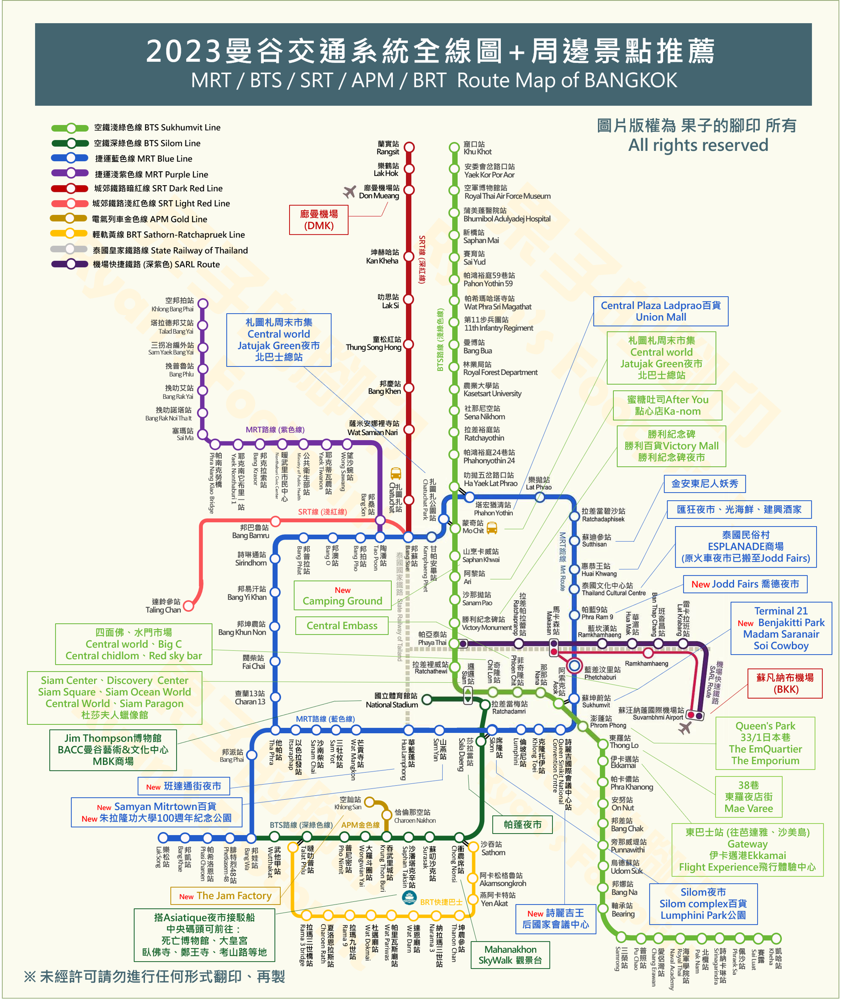

My first graduation trip in Thailand on 21st-26th June 2023.
Scroll down for my travel itinerary and some travel tips in Thai to you all~~
▋ My Travel Itinerary
| Day | Schedule |
|---|---|
| Day 1 | Airport → Hotel → Siam Zone → Jodd Fair Night Market |
| Day 2 | Pattaya 1 Day Tour → Central World → Big C |
| Day 3 | Thai Costume Rental → Wat Arun Photoshoot → Icon Siam |
| Day 4 | Chatuchak Weekend Market → DD Mall → Chulalongkorn University Food Street |
| Day 5 | Siam Zone → Central World |
| Day 6 | Siam Zone → Airport |
▋ Accomodation
If it is your first time visiting Thailand, you are strongly recommended to live near the BTS station
click to download 2023 Bangkok Subway Map
► Chatrium Grand Bangkok
We choose this hotel which located in the Siam District. There is shuttle bus bring you to the Siam Paragon Mall.
It takes only 5mins walking distance to the Siam Zone.
*Check and compare the price from different booking website*
▋ Transportation
Other than the subway, you can use car-hailing apps or local Tuk Tuk (auto rickshaw)

▋ Attractions


► Siam Zone
There are countless shopping malls and gourment restaurants inside the Siam Zone.
Leave more time for Siam as you won't be able to fully discover this fascinating place within couple hours!
Lists of mall that you don't want to miss!
- Siam square
- Siam Center
- Siam Paragon
► Street Market
Street Marekt is located in differnt area of Bangkok, each of them has there unique features and attractions.
Remember to bargain for the price in tourists sites!!! Stay chill and you may find good stuffs~
► Thai Costume Rental
Recently there is a craze for wearing traditional Thai costume. Beauties in Thai costume taking photos at the Wat Arun (Temple of Dawn) appear in Social Media
Sense of Thai is one of the rental store providing premium Thai Costume and professional photo-taking services.
Costume: 600-900 baht/ person. Photo-shoting fee: 2,600 baht/ hour.
Multiple plans are provided. Find more info in their offical IG account.
► Pattaya 1 Day Trip
How can you miss the chance to catch some rays and enjoy the beach in Thai ?!! If you've got limited time, you can choose to join a Klook one day tour instead !
We chose the tour Pattaya Beach and Koh Larn Coral Island Full Day Tour from Bangkok. The schedule is kind of rush but it's fine for us.
Search in Klook and find the trip that suit you~
▋ Something More
► 7-11
Thai 7-11 is famous for its good price, high quality taste, and large variety of food choice
The video below recommend food of 7-11 from a full meal to dessert
► Safety Concern
People mag worry about the safety in Thai. As what we've experienced, most Thai people are nice and helpful. You somehow do not need to worry too much on your safety.
But of course, do not stay out late and be aware of your environment at any time.